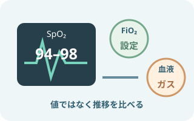
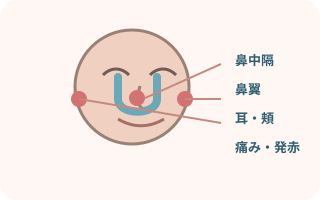

注意事項
- 成人急性期の鼻カニューレ式HFNC
- 導入時の確認、設定の読み方、観察、日常ケア
- 小児・新生児、在宅、気管切開用インターフェースは対象外
- 疾患別の開始・離脱プロトコルは院内手順へ
HFNCとは

高流量のガスを、温めて湿らせて送る
フロージェネレーター → 加湿チャンバー → 加温回路 → 専用鼻カニューレ。
患者の吸気需要に近い流量を届け、設定したFiO2を保ちやすくする。
機種により構成と設定範囲が違う。流量は患者の吸気需要、呼吸状態、快適性、採用機器の範囲に合わせて調整する。
使う場面と限界
- 通常酸素療法で目標酸素化を保ちにくい低酸素性急性呼吸不全
- 抜管後の呼吸補助
- NIV休止中の酸素化維持
- 患者が会話・排痰・口腔ケアを必要とする場面
- 気道を守れない、呼吸停止・切迫停止
- 強い呼吸仕事量、急速な疲弊、意識悪化
- 循環不安定、重いアシドーシス、進行する換気不全
- 目標SpO2を保てず、必要FiO2が増え続ける
COPDの急性高二酸化炭素血症では、HFNCをNIVの代用と決めつけない。NIVを先に検討する指針がある。
3つの設定を分けて読む

流量・FiO2・温度は別のつまみ
流量：吸気需要、呼吸仕事量、快適性に関わる。
FiO2：目標SpO2へ調整する。
温度：加温加湿と忍容性に関わる。
- 指示された流量（L/分）
- 指示されたFiO2または酸素濃度（%）
- 指示された温度設定（℃）
- 目標SpO2範囲
- 再評価時刻と治療強化の条件
Airvo 2の設定範囲は、流量2〜60L/分、FiO2 0.21〜1.0、温度31・34・37℃。設定範囲は機種で異なり、実際の設定は患者の状態と医師の指示で決める。
カニューレサイズと装着

鼻孔を塞がず、鼻中隔へ押しつけない
プロングと鼻孔の間に隙間を残す。
サイズ表で選び、左右の向き、深さ、チューブの引っ張り、耳・頬の圧迫を確認する。
カニューレ径を鼻孔径の約50%以下とする資料もある。全製品共通の固定値ではないため、使用するカニューレのサイジングガイドと電子添文を確認する。
なぜ呼吸が楽になるのか


効果は一つではない。高流量、安定したFiO2、死腔洗い流し、加温加湿、動的な陽圧が重なって呼吸を支える。
必要物品
- HFNC対応フロージェネレーター
- 指定された加湿チャンバー
- 指定された給水バッグまたは滅菌蒸留水
- 指定された加温送気回路
- 患者に合うサイズの専用鼻カニューレ
- 酸素供給源と指定接続部品
- パルスオキシメータ
- 必要時、心電図・血圧モニター
- 必要時、皮膚保護材
- 吸引・救急・気道確保物品
水、回路、カニューレ、酸素接続部品は互換性を確認する。推奨されない組み合わせや再使用禁止品を使わない。
導入手順
 本人・目的・指示を照合
本人・目的・指示を照合流量、FiO2、温度、目標SpO2、再評価と治療強化の条件を確認。
 水・チャンバー・回路を組む
水・チャンバー・回路を組む採用機器の手順どおりに接続。水位、給水、回路のねじれ、接続の緩みを確認。
 起動し、加温を待つ
起動し、加温を待つカニューレ装着前にガスが流れることと設定温度への準備状態を確認。
 指示された3設定へ
指示された3設定へ流量、FiO2、温度を別々に照合。画面表示と酸素接続を確認。
 隙間を残して装着
隙間を残して装着鼻中隔へ当てず、締めすぎない。チューブの重みと耳・頬の圧迫を除く。
 早期に反応を再評価
早期に反応を再評価呼吸数、努力呼吸、SpO2、意識、循環、快適性、必要FiO2の変化を記録。
観察項目




設定値だけでなく、同じFiO2で呼吸が楽になったか、逆に必要FiO2や呼吸仕事量が増えていないかを時系列で見る。
回路・結露・アラーム
- 回路の低い位置と結露量を確認
- 患者側へ水が流れない向きで扱う
- 排水方法は機器・回路の手順へ
- 送気チューブを布やタオルで覆わない
- 電源、酸素供給、給水、水位
- 回路の外れ、屈曲、閉塞、破損
- カニューレの外れ、分泌物、鼻孔閉塞
- 患者の呼吸とSpO2を同時に確認
治療失敗を疑う変化

単発値ではなく、悪化する方向を見る
呼吸数・努力呼吸・必要FiO2が上がり、SpO2や意識・循環が悪化。
血液ガス、胸部所見、原因疾患も再評価し、早く報告・応援要請する。
日常ケア
- 鼻腔・口腔内の乾燥、分泌物を確認
- 口腔ケアと排痰を援助
- 鼻中隔、鼻翼、耳、頬の除圧
- カニューレ位置と固定を定期的に確認
- 食事中の呼吸状態と誤嚥リスクを評価
- 体位調整後に回路と設定を再確認
- 水・回路・カニューレの交換時期を管理
「鼻カニューレだから必ず食べられる」とは限らない。呼吸状態、嚥下機能、流量、食形態、医師・ST等の評価と院内手順で判断する。
出典
- European Respiratory Society「ERS clinical practice guidelines: high-flow nasal cannula in acute respiratory failure」2022
- AARC「Management of Adult Patients With Oxygen in the Acute Care Setting」2022
- Fisher & Paykel Healthcare「Airvo 2 ネーザルハイフローシステム」
- PMDA 医療機器電子添文「F&P オプティフロー」2024年10月作成
- PMDA 医療機器電子添文「F&P Optiflow Junior」2026年5月改訂
- PMDA 医療機器電子添文「フロージェネレーターmyAirvo用回路」